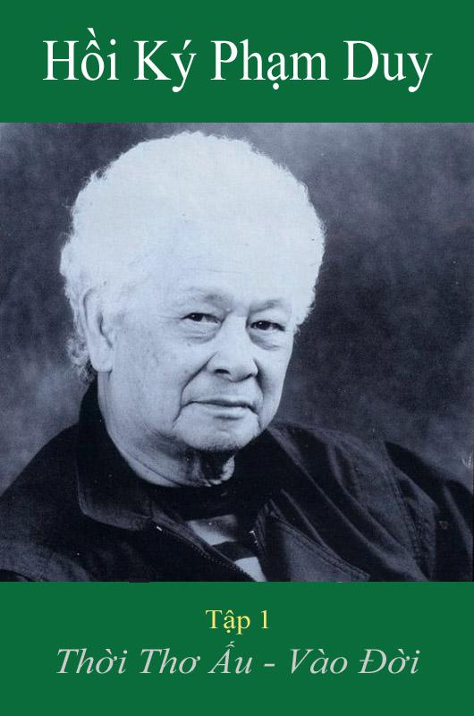

Kể lại chuyện mình xẩy ra từ sáu, bẩy mươi năm về trước là một việc làm không dễ. Tuy nghề nghiệp bắt buộc người nhạc sĩ
phải có trí nhớ tốt để thuộc lầu hàng trăm, hàng ngàn bản nhạc, nhưng khi ngồi đào sâu ký ức để tìm về quá khứ thì tôi thấy
những dữ kiện quá ư phức tạp, quá ư hỗn độn. Tôi lại không còn ở trong nước để kiểm chứng hàng chục, hàng trăm những nghi vấn về địa chí, về danh xưng và cũng không có trong tay những bản đồ với tên tỉnh, tên huyện, tên phố đã được thay đổi tới 4, 5 lần dưới nhiều chính thể... Do đó Hồi Ký Thời Thơ Â'u Vào Đời này có những khuyết điểm tuy không quan trọng nhưng tác giả cũng xin một sự độ lượng nào đó của người đọc.
Là con mồ côi cha quá sớm, tôi muốn dâng cuốn Hồi Ký này lên người bố mà tôi không được gần gũi, vì tôi tin ở huyết thống.
Tôi mường tượng bố tôi sinh ra đã có người Pháp cai trị dân Việt Nam rồi. Bên cạnh những hành động của Phan Bội Châu, Phan Chu
Trinh cùng với các bạn "đồng chí hướng" như Nguyễn Văn Vĩnh, Trần Trọng Kim... bố tôi đem uẩn ức của dân nô lệ vào đời và hoạt
động trong nhiều địa hạt, khi làm công tác trong một Nghĩa Thục, khi dùng ngòi bút tả chân trong văn chương và báo chí, khi tranh thương với Hoa Kiều v.v... Tất cả cho mục đích thay đổi xã hội, thay đổi cuộc đời.
Nói như vậy vì tôi thèm được thấy bạn đọc nhìn nhận Hồi Ký này không khởi sự từ những năm 20 khi tôi vừa ra đời mà còn ôm đồm thêm những dữ kiện về thế hệ cha ông trong những năm đầu của thế kỷ. Nếu được như vậy, toàn bộ Hồi Ký của tôi sẽ bao trùm được đủ 100 năm của thế kỷ mà 50 năm đầu là sự đoàn kết của tất cả "người Việt nô lệ" -- trong đó có bố con tôi -- trong việc giành Độc Lập và Tự Do. Muốn biết rõ hơn cuộc đời của một "người Việt tự do" -- là tôi -- trong 50 năm sau của thế kỷ thứ 20, xin mời bạn đọc tiếp những cuốn Hồi Ký tiếp theo.
Thế hệ ông cha ta, với các phong trào Văn Thân, Đông Du và Đông Kinh Nghĩa Thục, thành công hay thất bại, ai cũng đều biết.
Riêng tôi biết rõ bố tôi chết đi mà chưa thực hiện được những giấc mơ của mình. Những đứa con là nơi để bố trút bầu tâm sự.
Bốn người con lớn không thừa hưởng vẹn toàn thông điệp của bố, có lẽ tại vì các anh các chị chưa phải là thứ "bất mãn"
được bố cấy vào trong mẹ. Thằng con út, khởi sự là bào thai đã được bố gửi gấm những hoài bão vào lúc bố biết mình đã thất bại và
sắp chết. Nó lớn lên, vì sự linh thiêng của huyết thống, nó thực hiện giấc mộng không thành của người cha ?!
Hình như Goethe và Maxime Gorki đã coi những ngày thơ ấu của hai ngài là những ngày Đại Học. Vốn chẳng được theo đuổi việc học hành
trong sách vở tại nhà trường, tôi cũng bắt chước hai vị để nói rằng trường Đại Học Âm Nhạc của tôi là kho tàng âm nhạc bình dân mà
tôi hấp thụ trong quãng đời sớm lang bạt của tôi. Thuật sống của tôi học được ở mọi tầng lớp nhân dân mà tôi sớm được tiếp xúc.
Lẽ dĩ nhiên sự giáo dục về cuộc đời cũng đến với tôi từ mẹ ruột, từ vú nuôi, từ mẹ nuôi, từ thầy giáo, từ bạn bè... đến cả từ những
khắc nghiệt của người anh cũng như từ những ân sủng của người tình. Xin được tri ân tất cả!
Tôi cũng cần phải cám ơn những người giúp tôi rất nhiều trong việc hoàn tất tập HỒI KÝ này: Bạn cùng học tại những ngôi trường cũ
như Bác Sĩ Nguyễn Đình Thi (Trường Hàng Vôi), Cao Trung (Trường Bách Nghệ), Tạ Tỵ, Võ Lăng (Trường Mỹ Thuật). Bạn tâm giao cũ hay
bạn mới làm quen là những người ở từng địa phương như Phạm Thanh Liêm, Lê Ninh (Hưng Yên), chị Lê Tôn Hy (YênThế-Bắc Giang), Nguyễn
Sĩ Hưng (Thanh Hoá), Cao Xuân Vỹ, Nguyễn Đình Khuê (Nghệ An), Nguyễn Cúc (Huế), Hàn Vĩ, Lê Trọng Nguyễn (Hội An), Nguyễn Văn Sang
(Quảng Ngãi), Lữ Liên (Dalat), Trần Văn Khê (Vĩnh Long). Bạn văn nghệ như Lê Văn-Vũ Bắc Tiến, Nguyễn Hiền. Tất cả đã nhắc lại tên
các rạp hát và các điạ danh của tỉnh mình, hoặc kể lại vài mẩu chuyện cũ để cho cuốn Hồi Ký của tôi thêm mầu sắc và thêm xác thực.
Lẽ ra có hai tập: Hồi Ký Thời Thơ Â'u và Hồi Ký Thời Vào Đời. Nhưng để tiết kiệm thời giờ và tiền mua sách của bạn đọc, tôi thu gọn
hai tập vào một cuốn sách. Do đó toàn bộ Hồi Ký chỉ còn 4 tập thay vì 5 tập như tôi đã rao. Vậy tôi xin rao lại, và xin trân trọng
mời bạn đọc cùng tôi đi về dĩ vãng.
Thị Trấn Giữa Đàng,
Mùa Đông 1989